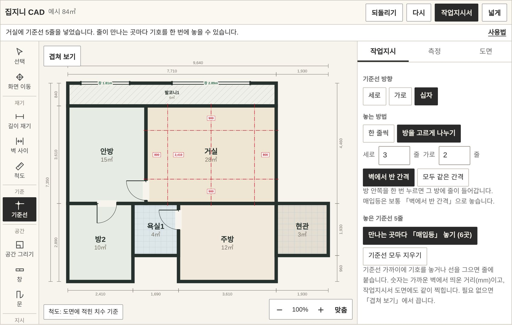
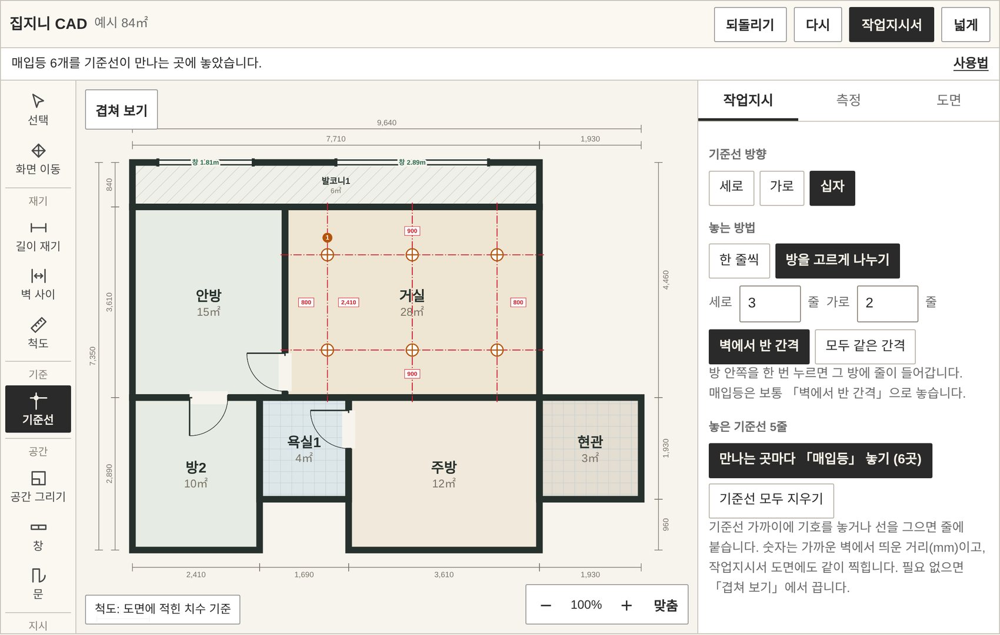
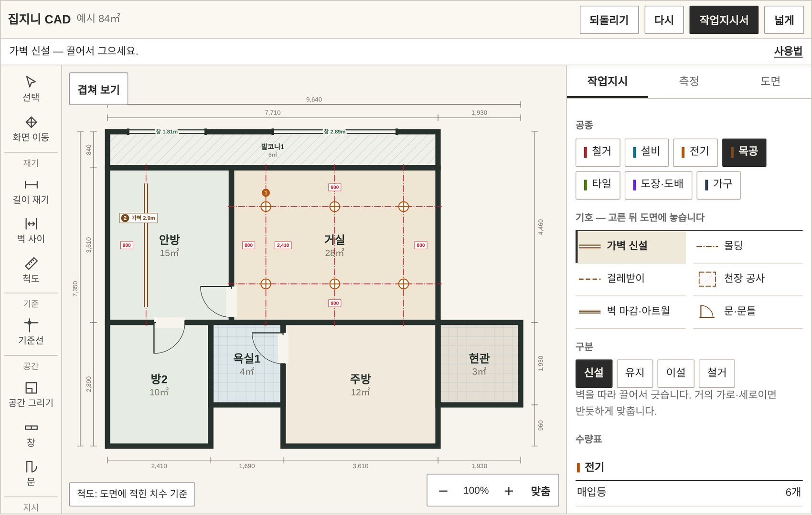
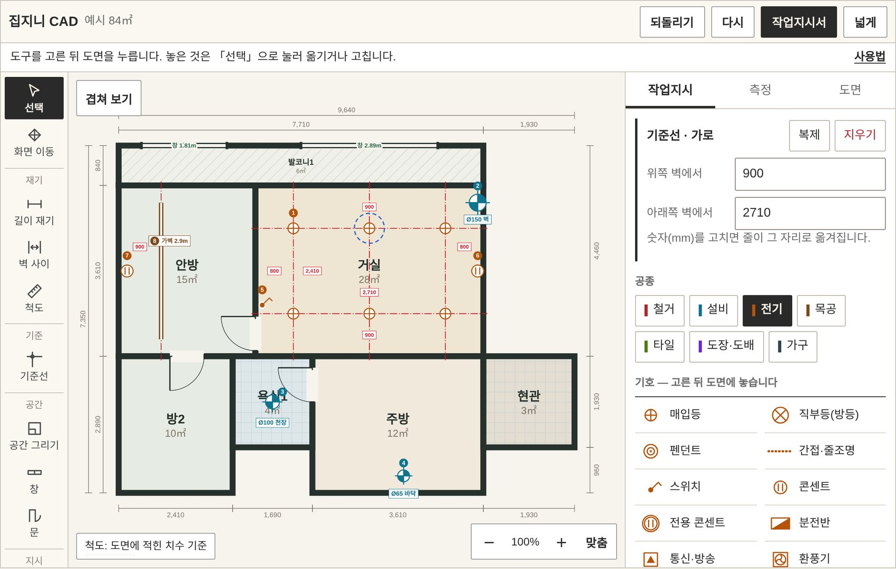
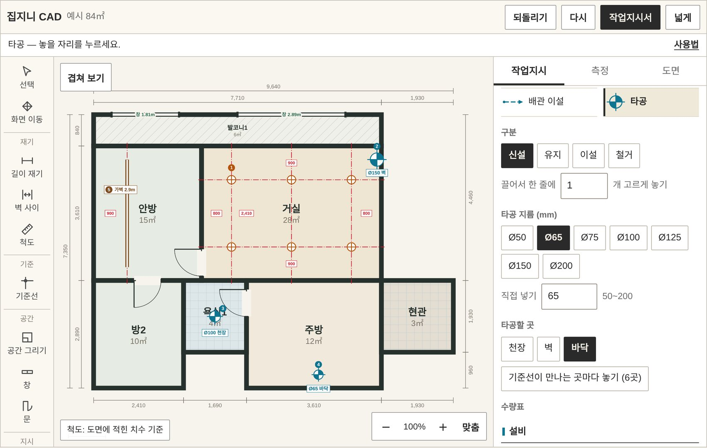
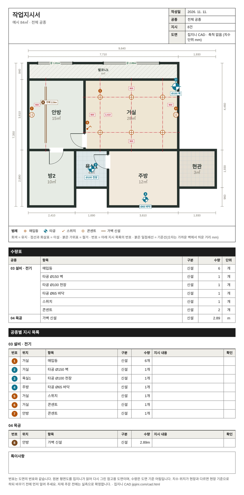

집지니 CAD 사용법
평면도를 올린 뒤 작업지시서를 뽑기까지의 순서입니다. 화면 사진은 모두 예시 도면(84㎡)을 넣고 실제 화면을 찍은 것입니다.
도면 올리기
- 부동산 앱에서 우리 단지 평면도를 화면에 꽉 차게 띄워 갈무리합니다.
- 집지니 CAD에서 「그림 고르기」를 누르거나, 그림을 끌어다 놓습니다.
- 전용면적을 알면 같이 넣습니다. 방 크기와 길이가 더 정확해집니다.
- 15~30초 뒤 집지니가 다시 그린 도면이 나옵니다. 「이 도면으로 공사 계획 시작」을 누릅니다.
방 이름이 다르게 읽혔으면 편집 화면에서 그 방을 눌러 이름을 고칩니다. 문이 빠졌으면 왼쪽 「문」 도구로 문 폭만큼 벽을 따라 끌어 놓습니다.
화면 보는 법

| 맨 윗줄 | 되돌리기, 다시, 작업지시서, 넓게(화면 가득 펴기) |
| 안내 줄 | 지금 고른 도구로 무엇을 누르면 되는지 한 줄로 알려 줍니다. |
| 왼쪽 도구 | 선택·화면 이동, 길이 재기, 기준선, 공간·창·문 그리기, 작업 기호, 화살표·글자 같은 표시 |
| 오른쪽 칸 | 공종과 기호를 고르는 곳입니다. 놓은 것을 「선택」으로 누르면 여기에서 고치거나 지웁니다. 아래에 수량표가 쌓입니다. |
| 겹쳐 보기 | 공종별로 켜고 끕니다. 전기만 남기고 보거나, 기준선만 끌 수 있습니다. |
확대는 마우스 바퀴나 두 손가락 벌리기, 화면 옮기기는 빈 곳을 끌면 됩니다. 「맞춤」을 누르면 도면이 화면에 꽉 차게 돌아옵니다.
작업 기호 놓기
- 오른쪽에서 공종을 고르고, 그 아래에서 기호를 고릅니다.
- 「구분」에서 신설·유지·이설·철거 가운데 하나를 고릅니다.
- 도면을 누릅니다. 기호 모양에 따라 놓는 법이 다릅니다.
| 기호 모양 | 놓는 법 |
|---|---|
| 점 (등·콘센트·수전) | 놓을 자리를 누릅니다. 끌면 한 줄에 정한 개수만큼 고르게 놓입니다. |
| 선 (가벽·몰딩·배관) | 벽을 따라 끌어 긋습니다. 몰딩·걸레받이는 방 안쪽을 한 번 누르면 둘레 전체에 들어갑니다. |
| 구역 (철거·타일·도배) | 공간 안쪽을 누르면 그 공간 전체에 들어갑니다. 일부만이면 「직접 그리기」로 모서리를 찍습니다. |
놓은 기호는 「선택」으로 눌러 옮기고, 오른쪽에서 메모(예: 3구 · 바닥에서 300)를 적습니다. 메모는 작업지시서의 「지시 내용」 칸에 그대로 들어갑니다.
기준선으로 줄 맞추기
왼쪽 「기준선」을 누르면 오른쪽 칸이 기준선 설정으로 바뀝니다. 방향은 세로·가로·십자, 줄 색은 빨강·파랑·초록, 놓는 방법은 두 가지입니다. 색을 나눠 쓰면 등 자리 줄과 가벽 자리 줄을 구분하기 쉽습니다.
매입등을 같은 간격으로 놓을 때
- 「방을 고르게 나누기」를 고르고 세로·가로 줄 수를 넣습니다. 예: 세로 3줄, 가로 2줄.
- 방 안쪽을 한 번 누릅니다. 그 방에 줄이 들어가고, 줄마다 가까운 벽에서 띄운 거리(mm)가 적힙니다.
- 「만나는 곳마다 매입등 놓기」를 누릅니다.


다른 기호도 같습니다. 직부등이나 타공을 먼저 고른 뒤 기준선으로 돌아오면 단추 이름이 그 기호로 바뀝니다. 기호를 손으로 놓을 때도 기준선 가까이에서는 줄에 붙습니다.
가벽 자리를 잡을 때
- 방향을 「세로」(또는 가로)로, 놓는 방법을 「한 줄씩」으로 둡니다.
- 「벽에서 ○○ mm」 칸에 띄울 거리를 넣습니다. 예: 900.
- 기준으로 삼을 벽 가까이를 누릅니다. 가까운 쪽 벽에서 그만큼 띄운 자리에 줄이 놓입니다.
- 공종 「목공」의 「가벽 신설」을 골라 줄을 따라 끌어 긋습니다. 선이 줄에 붙습니다.

놓은 기준선은 「선택」으로 누르면 양쪽 벽까지의 거리가 나옵니다. 숫자를 고치면 줄이 그 자리로 옮겨집니다.

타공 자리 표시
- 공종 「설비」에서 「타공」을 고릅니다.
- 지름을 고릅니다. Ø50·65·75·100·125·150·200 가운데 고르거나 50~200 사이 숫자를 직접 넣습니다.
- 타공할 곳을 천장·벽·바닥 가운데 고릅니다.
- 도면에서 구멍 자리를 누릅니다.

기호 옆에 「Ø100 천장」처럼 지름과 위치가 적히고, 수량표에는 지름·위치별로 따로 셉니다. 높이처럼 더 적을 것은 메모에 씁니다(예: 바닥에서 2,100).
치수 재기와 척도
| 길이 재기 | 잴 두 점을 끌면 길이(mm)가 적힙니다. 벽 모서리 가까이에서는 모서리에 붙습니다. |
| 벽 사이 | 방 안쪽을 누르면 좌우·위아래 벽 사이를 한 번에 잽니다. |
| 척도 | 길이가 나오지 않으면 척도가 없는 것입니다. 오른쪽 「측정」에서 전용면적을 넣거나, 길이를 아는 두 점을 찍어 잡습니다. |
물량 보기
오른쪽 「물량」을 누르면 도면에 놓은 기호가 의뢰서 항목별 물량으로 모입니다. 도배는 벽과 천장 넓이, 바닥재는 바닥 넓이, 벽 타일과 가벽은 길이에 높이를 곱한 넓이, 등과 콘센트는 개수로 셉니다.

| 천장 높이 | 벽 넓이 계산에 씁니다. 기본 2,300mm이고 우리 집에 맞게 고칩니다. |
| 의뢰서 항목 고르기 | 도배는 합지·실크, 바닥은 장판 두께·강마루처럼 등급이 여럿인 기호는 놓기 전에 고르거나, 놓은 뒤 「선택」으로 눌러 바꿉니다. |
| 높이 | 벽 타일·가벽·아트월 선은 높이를 따로 적을 수 있습니다. 비우면 주방 벽 타일은 800mm, 그 밖은 천장 높이로 계산합니다. |
| 찍지 않는 항목 | 보양·사다리차·도어락처럼 도면에 표시하지 않는 공사는 아래 목록에서 고르면 물량표에 들어갑니다. |
공법 고르기
같은 타일이라도 떠발이로 붙이느냐 압착으로 붙이느냐에 따라 자재와 품이 달라집니다. 기호를 고르면 그 아래에 공법이 시공 순서대로 나옵니다. 여기서 고른 공법으로 다음부터 놓이고, 이미 놓은 자리는 「선택」으로 눌러 바꿉니다. 덧방에 떠발이를 고르거나 철거 후 시공인데 방수 구역이 없는 것처럼 현장에서 말이 안 되는 조합은 붉은 글로 알려 줍니다. 고른 공법은 도면에 짧게 적히고 작업지시서의 「공법 · 지시 내용」 칸에 그대로 나옵니다.

| 도배 | 기존 벽지 제거·덧방, 줄퍼티·올퍼티, 코너비드(각대), 초배(부직포 띄움·삼중지·네바리·밀착) |
| 타일 | 철거 후·덧방, 붙임(압착·개량압착·떠발이·본드·에폭시), 줄눈, 붙임 무늬. 모서리는 「모서리 마감」 기호로 코너비드나 졸리컷 45도를 찍습니다. |
| 방수 · 젠다이 | 방수 구역은 액체방수·도막방수와 벽 올림 높이, 젠다이는 길이를 긋고 높이와 폭을 적으면 조적 넓이와 벽돌 수가 나옵니다. |
| 목공 · 단열 | 가벽과 천장은 각재·경량 틀, 석고보드 1겹(1P)·2겹(2P), 흡음재. 단열은 이보드 본드 붙임·각재 틀과 압출법 단열판·우레탄 뿜칠 가운데 고르고 두께(T)를 적습니다. |
| 바닥 · 도장 · 전기 | 바닥 바탕(수평 몰탈 등)과 장판 온통 접착·이음 용착, 도장 올퍼티·뿜칠, 배선 천장 속·벽 홈파기 매립·노출 몰드 |
물량은 도면 기준 어림입니다. 자재를 주문하기 전에는 실측으로 확정합니다. 「이 물량으로 견적 받기」를 누르면 의뢰서로 넘어갑니다.
작업지시서 뽑기
맨 윗줄 「작업지시서」를 누르면 도면·범례·수량표·공종별 지시 목록이 한 장으로 나옵니다. 위쪽에서 공종을 고르면 그 공종 것만 따로 뽑습니다. 전기 기사에게는 전기만, 목수에게는 목공만 건넬 수 있습니다.
| 인쇄 | A4 세로로 인쇄합니다. |
| 그림으로 저장 | 한 장짜리 그림으로 내려받습니다. 카카오톡으로 보내기 좋습니다. |
| 글로 복사 | 지시 목록을 글로 복사합니다. 문자에 붙여 넣습니다. |

안 되는 것
| 정밀 도면 | 부동산 평면도를 읽어 다시 그린 참고용 도면입니다. 벽 두께, 문·창의 정확한 위치는 현장 실측과 다를 수 있습니다. |
| 읽지 못하는 그림 | 비스듬히 찍은 사진, 손 그림, 여러 세대가 한 장에 든 도면은 잘 읽지 못합니다. |
| 다른 기기에서 이어 하기 | 도면은 올린 기기의 브라우저에만 남습니다. 다른 기기로 옮기려면 그림으로 저장해 보내야 합니다. |
| 입면·천장도 | 평면만 다룹니다. 타공 높이나 스위치 높이는 메모로 적습니다. |